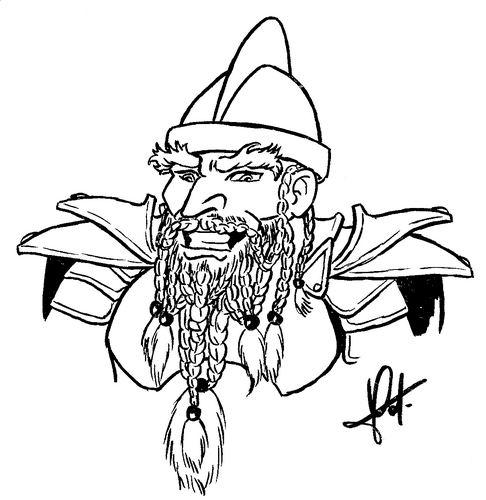

Forums galactiques > Assemblée Galactique : diplomatie officielle > Présentations
| Cassandra Respect diplomatique : 316  15/05 ETU 21:00  | Score : 2 Détails Je propose au commandant qui le souhaite, d'éxprimer ici qui il sont et se qui les a ammené
| ||
| Cassandra Respect diplomatique : 316 15/05 ETU 21:01 | Score : 12 Détails Bon je commence : Je suis la commandante Cassandra. Ma mère est morte quand j’avais 5ans et mon père je n’en presque aucun souvenir, juste une ou deux photos… Je suis âgée de *Elle eu une petite tous sèche*, Bref je vais vous expliquer ma venue :
Voilà quelques jours, le 6Mai pour être exact, j’ai reçu la « visite » d’un petit engin qui est apparu par un cercle lumineux au dessus de la table est, qui est tombé sur mon repas. Nous nous regardâmes avec ma Tante, nous étions seul à manger se midi, mon petit frère étant chez un copain et mon oncle au travail. Nous inspectâmes alors l’objet métallique quand soudain, il c’est allumé. Nous avons toutes les deux fait un bon en arrière. Le petit robot émis un Bip et on entendit la voix d’un homme qui sortait du tas de ferrailles et qui disait : La voix_ Si jamais se message te parvient, je veux que tu sache que je ne t’ai jamais oublié, je n’ai cessé de penser a toi… Ma tante poussa un petit cris et mis ses mains devant sa bouche, la voix continua…. La voix_ Je te revois encore dans ton landau en train de dormir à poings serrés. Mais tu doit être grande maintenant… La voix fit une brève pause, et j’en profite pour demander à ma mère qui c’était mais elle ne répondit pas et la voix repris… La voix_ Je suis désolé de ne pas avoir été présent, de ne pas t’avoir vu grandir, te voir rire et sourire, de n’être pas là dans les moments aussi bien merveilleux que difficiles de ta vie, mais maintenant de toute façon il est trop tard, tous le monde annonce une apocalypse dans notre galaxie, je sais que c’est grave d’en arrivée là pour que je me rend compte, mais heureusement tu est loin d’ici… La voix devenait de plus en plus triste et on pouvait entendre quelques sanglots… La voix_ Si jamais tu ressentirait l’envie, le besoin, le courage de suivre mes traces, de me connaître, de continuer mon parcours, perpétrer nos tradition, trouver ton héritage, je te mets ci-joint toutes les informations qui pourrait te servir… Et il fini par : La voix_ Remercie la personne qui ta recueillit de ma part. Je t’aime ma fille, je t’aime Cass…Bip L’engin avait l’air d’avoir fini sa retranscription. Je me tournis alors vers ma Tante. Elle était face à la fenêtre, le regard au loin… Je lui demande_ Tatie, c’était quoi se truc ? c’était qui cette voix ? s’il te plait répond moi ! Ma tante toujours tournée devant la fenêtre_ Ce n’est pas possible, ils nous ont dit qu’il était mort… Voilà, je vous raconterai la suite un peu plus tard, je laisse la place aux autres commandants… | ||
| Le Troll Respect diplomatique : 75  15/05 ETU 21:01 | Score : 2 Détails Je voulais retrouver mes amis commandants, pouvoir leur reparler et surtout, boire avec eux !
| ||
| Adam Warlock Respect diplomatique : 9  15/05 ETU 21:34 | Score : 8 Détails je suis Adam Warlock de Titan, on me dit unique en cette réalité.
On me dit aussi affamé de puissance, j'ai comme amant la mort, j'ai plus d’une fois menacé l’univers… Un jours m'étant emparé du gant de l’infini…j'ai conquis brièvement la maîtrise du temps, de l’espace, du pouvoir, de l’esprit de l’âme… Dans le même temps, j'ai œuvré mainte fois à la survie du cosmos…...... | ||
| Nasuada Respect diplomatique : 23  15/05 ETU 21:39 | Score : 7 Détails *Une jeune femme s’avança au milieu de l’assemblée, elle paraissez troublée mais sur d’elle.
Elle dit : « Bonjours a tous commandant et commandante de tous les coins de la galaxie, Je m’appelle Nasuada, Fille du regretté Baraghon, que vous ne devez sûrement pas connaître. J’ai prit le pouvoir de son royaume à sa mort. Je vous souhaite à tous bonne continuation. » *Elle se rassit et attendit la description des autres commandants.* | ||
| Oris Respect diplomatique : 6  15/05 ETU 21:43 | Score : 6 Détails Un etrange commandant dont on ne voyait pas le visage se leva pour parler:
"je suis oris je suis un des commandants survivant de l'apocalypse magnetique et tout ce que je souhaite,c'est reconstruire mon empire comme il etait avant l'apocalypse". | ||
| Macastril Respect diplomatique : 773  15/05 ETU 21:44 | Score : 7 Détails Un homme à la carrure imposante et au caparaçon étincelant se leva de l'Assemblée et tonna d'une belle voix de basse.
"Chers pairs, je suis le Commandant Macastril! J'étais là avant l'Orage, et ma présence ici marque le début d'une nouvelle ère, pour nous tous! Ce nouveau départ est l'occasion d'établir une civilisation nouvelle, sur des bases saines et morales comme le pognon, la bière, la violence gratuite et les péritapé... pétripato... pétapri... les prostiputes! Il leva alors son gant de métal, annonçant le début tant attendu de l'orgie galactique. "A vos ogives, frères! Qu'une ère de sang, d'alcool et de sexe s'offre à vos yeux ébahis de pervères polymorphes! | ||
| Angelus L Oméga Respect diplomatique : 1305  15/05 ETU 21:51 | Score : 6 Détails [Un léger souffle accompagné d’une douce chaleur s’infiltra dans la pièce. Un être ailé pénétra avec grâce dans ce lieu. L’atmosphère pulsait à ses contours. Ses ailes étaient de feu, brûlant sans fin, arrosant les capteurs visuels d’un chaud orangé, parcouru de langues rouges incandescentes. Aussi résistantes que le mithril le plus dense, tout en partageant la légèreté et la souplesse de la soie la plus fine. Elles rayonnaient, inondant de lumière le lieu, réduisant les ombres au néant. Telles des colonnes de feu ardent, elles émettaient une aura de force calme, de puissance retenue, une énergie dissimulée.
Elles battaient. Lentement. Tel un phénix renaissant, ses mouvements étaient opulents, brassant délicatement l’air ambiant. Pourtant, de ces gestes calmes émanaient la vigueur des muscles. Le corps d’Angelus ressemblait à celui d’un jeune humain, ses longs cheveux bruns-rouges cascadaient autour d’un visage juvénile et mystérieux, ponctué par des yeux de braises. Tout son corps n’est que souplesse. Ses muscles sont fins, sa peau, douce et faiblement bronzée. Il est nu, excepté un léger voile rouge entourant ses hanches, cachant le début de ses cuisses. L’ange (?) continue à battre des ailes, tournoyant autour de l’Assemblée. A partir d’un moment, il stationna sur place, laissant ses ailes écartées le porter au dessus de l’estrade. Il prit la parole d’une voix millénaire, ses mots résonnant lourdement sur les murs, s’imprimant dans les esprits.] - Gens du Sol, je vous salue. Je ne tiens pas à étaler mes faits d’arme ou ma vie privée, qui ne vous regarde pas. Toutefois, je vous accorderai mon attention, et mon temps pour vous dire ceci : Celui qui pense que je suis des cieux se trompe, Celui qui pense que je suis divin se trompe, Celui qui ne pense rien de moi est sur le bon chemin. Les miens sont nés de l’apocalypse, du feu et des flammes de la haine humaine. | ||
| ALIEN Respect diplomatique : 8  15/05 ETU 21:53 | Score : 8 Détails Un etre relativement imposant se leva, fit un pas et gromela :
Bonjour, Humanoïdes. Je suis ALIEN, et j'ai été propulsé ici d'une maniere qui m'est inconnue. D'apres vos dires, il s'agirait d'une apocalypse magnétique? Soit, mais je veux rentrer chez moi! ALIEN se rassit, remarquant que l'endroit n'était pas propice à s'emporter. Apres tout, ces gens n'en savaient peut etre pas plus que lui? | ||
| Paymon Respect diplomatique : 79  15/05 ETU 22:04 | Score : 5 Détails Une ombre s'avança dans l'assemblée, telle un nuage noir qui glaça les coeurs des commandants présents. Si ce n'avait été de la présence de l'ange de feu, ils seraient tous déjà fous à lier. La chose, si froide qu'elle fit se craqueler les pierres sur lesquelles elle passait, s’arrêta au milieu de l'assemblée. Elle commença à se condenser, prenant une forme humaine mais toujours aussi sombre. L'être était de taille moyenne, habillé d'une magnifique armure finement ouvragée dans un métal noir. Il semblait être de sexe masculin, mais on ne pouvait réellement s'en assurer.
"Il" parla. Sa voix était glaciale, mais ses yeux flamboyaient d'une lumière blanche intense. "Commandants, commandantes, créatures de toutes sortes, je me montre à vous sous ma forme la moins terrible, et celle qui vous ressemble le plus. Je me nomme Paymon, et je fus créé, du moins je crois l'avoir été, par la collision de ce qui fut appelé à l'époque "Printemps rouge" et "Le Trou Noir". Je suis la Lumière et les Ténèbres. Je suis le Milieu de toutes Choses, l'Incarnation du Bien et du Mal réunis sous une seule entité. Ne vous en faites pas, hommes et femmes de cette assemblée, car bien que vous sembliez sceptique, je ne suis pas mauvais. Ni bon d'ailleurs. Je suis la Neutralité. Priez pour que je ne change pas de voie." Paymon jeta un coup d'oeil sur les quelques commandants présents. "Courage, gens de pouvoir, malgré les temps troubles qui nous assaillent, j'aperçois la lumière de l'autre côté du précipice. Construisons un pont qui résistera aux vents de la folie humaine, aux attaques du péché et aux marées du Mal!" La chose éclata en une nuée de colombes noires à bandes rouges, premières couleurs que l’on put voir sur le corps de Paymon. Les oiseaux sortirent par une haute fenêtre. | ||
| Ged Azura Respect diplomatique : 14  15/05 ETU 22:08 | Score : 9 Détails Un commandant entra dans la salle vétu d'un long manteau gris. Il se diriga d'un pas sûr vers l'estrade et commença à s'exprimer :
"Bonsoir Commandantes et Commandants, Je suis Ged Azura, dirigeant du clan Shushin. Je suis un nouveau venu dans cette galaxie. Mon clan cherchait une nouvelle galaxie pour pouvoir commençer un nouveau départ et ainsi pouvoir perpétuer nos traditions. Mais notre voyage a été interompu par l'ouragan magnétique qui nous a conduit tout droit ici. Nous espérons pouvoir nous établir convenablement dans cette galaxie. En ce qui concerne l'histoire de mon clan, elle est longue et sombre et je n'en dirai donc pas plus pour l'instant. A partir de ce jour, moi Ged Azura parlerai au nom de mon clan dans cette Assemblée." Sur ces derniers mots, l'étrange personnage alla s'asseoir, attendant la venue de nouveaux commandants. | ||
| Avoch Dar Respect diplomatique : 8  15/05 ETU 22:13 | Score : 5 Détails **Un commandant s'approcha**
Commandantes,Commandants! Je me présente Avoch Dar chef du peuple de Voltmand. Je suis arrivez parmis vous par une facheuse erreur de la part de mes scientifiques! Ces sois disant Elite de notre Peuple penssait pouvoir nous faire voyager dans le temps... Mais me voila et donc je serais le représentant officiel de mon peuple! Je vous souahite une bonne soirée ainsi que Paix et Bonheur dans cette galaxie! **Avoch Dar alla s'installé sur un siège et sorti une plaque de donner sur des rapport concernant les dégats qu'avait subit sa planète pendant le voyage...** | ||
| Vecna Respect diplomatique : 423  15/05 ETU 22:19 | Score : 3 Détails *****Un sombre squelette vétu d'une robe noir et armée d'une faux se présenta avec des claqueties de dents et une voie roque et sourde ...****
Je me prénomme Vecna je ne vous veux aucun mal , sauf si vous possédez se dont je convoite ... Je n'ai plus chair , je ne suis plus faible comme avant , j'étais connu sous le nom de ..... je ne m'en souvient même plus... Nous allons écraser ceux qui se sont rebellé et j'éspère que vous ferez de même ! ***La force vient de la non-vie *** | ||
| Nitocris Respect diplomatique : 28  15/05 ETU 22:24 | Score : 7 Détails Un homme d'une quarantaine d'année, se leva à son tour et pris la parole.
"Chère commandantes, chers commandants, C’est avec joie que je viens à vous pour me présenter à vos. Je m’appelle Juan Nitocris. Je suis le digne représentant du peuple Upuautiens. Les Upuautiens sont un peuple pacifique dont le seul objectif est développer un commerce fleurissant ainsi que des relations diplomatiques et commerciales privilégiées avec ses plus proches voisins. En espérant pouvoir vivre en pleine harmonie avec l’ensemble des peuples de la galaxie, je vous salut bien bas mes chers confrères. » Sur ces paroles, le commandant se rassis. | ||
| Gaston Lagaffe Respect diplomatique : 401  15/05 ETU 22:27 | Score : 4 Détails Un jeune homme a moitié assoupi arriva, s'approcha du pupitre et parla:
- HHHHMMMM ??? Bof!! Je m'appelle Gaston. | ||
| le dechiketeur Respect diplomatique : 33  15/05 ETU 22:31 | Score : 11 Détails *Revenu de l’enfer, il à été châtié de ce lieu car le malin lui-même ne pouvait pas rivaliser avec une telle cruauté. Cet homme, ce damné connu vient de renaître C’est un homme bannit du lieu d’où personne ne revient. Il n’a foi en rien, peur de rien. Il n’aime personne, rejette tout. C’est le Dechiketeur.
« Noble assemblée je vous salut, Je vais être bref, je suis le Dechiketeur, noble tueur schizophrène fou à lié. Ne vous mettez pas à travers de ma route si vous tenez à la vie. Je ne menace personne pour le moment. D’autres part, le système politique qui sera mit en place par vos plus grands dirigeants n’aura aucun effet pour moi. Je n’obéirai qu’à mes règles. N’essayez en rien de me faire aller vers un de ces systèmes de bisounours. Au passage je tiens à préciser la création prochaine de la maison du feu. Un regroupement de tueurs en tout genre, obéissant à l’anarchisme. Je vous laisse en espérant ne pas vous avoir tétanisé car je n’ai pas encore agis. » | ||
| Ariétan Respect diplomatique : 102  15/05 ETU 22:40 | Score : 5 Détails Je suis Ariétan, ex Ministre de la Justice du Gouvernement de l'ère ETU.
Je suis actuellement..... Sparky souffla "Le Roi de l'ARF" - Euh je connais pas encore tout a fais ma fonction parmis vous. - roo quel boulet ! - Sparky restez courtoi - Vous avez le plus grand nombre de sujets qu'il puisse exister et vous dites rien ! - Je ne pense pas que hurler que je suis le Roi des Morts m'attire la sympathie de l'assemblée, cela pourrai porter préjudice aux votres. - préjudice mon cul ! on est mort ! expliquez moi ce qu'on risque ? Ariétan se rassis en se tenant la tete entre les mains.... | ||
| BAALBERITH Respect diplomatique : 96  15/05 ETU 23:02 | Score : 1 Détails je suis un démon secondaire, maître des alliances, secrétaire général et archiviste des Enfers.
Les phéniciens, qui l'adoraient, le prenaient à témoin de leurs serments. | ||
| Zarakai Respect diplomatique : 4  15/05 ETU 23:12 | Score : 4 Détails Un nain arriva :
"Alors voila je suis un maitre nain..." Une voix le coupa : "Et pepep, c'est au narrateur de te présenter..." "-Ah bon?" "-Zarakaï, nain niveau 11." "-Et ya du vécut là." "-Tu confonds vécu avec cuvé. Cheuveux roux, yeux noirs, barbe rousse tressée." "-Ma fierté, ma vie." "-C'es tressé?" "-Bah oui!" "-C'est raté! Ces rastas... Un mètre quarante..." "-Et demi..." "-Son apparence massive est au diapason de ses origines nanesques." "-Pour un nain, je suis un beau nain!" "-Beau et nain sont antinomiques..." "-Anti quoi?" "-Il porte une armure en adamantium." "-Eh! La classe quoi!" "-Et il a une jambe en métal. C'est la meilleure partie de son anatomie. Zarakaï est rustre, hargneux, cupide." "-Non, cul sec!" "-Et inconscient..." "-Oh si je dors, je dis pas mais sinon je vois pas!" "-Il combat avec un marteau enchanté pouvant être lancé sur les ennemis avec un effet boomerang débraillable." "-Wou! ça c'est techenique, ça hein! C'est techenique!" "-C'est tout!" "Bah tu parles d'un narrateur, grogna Zarakaï, tu leur as même pas dit que j'étais commerçant de la Guilde!" | ||
| Corad Respect diplomatique : 90  16/05 ETU 07:42 | Score : 7 Détails Un homme tout vêtu de noir s'avança lentement dans l'assemblée. Il rejeta en arrière son serviteur d'un geste de la main et prit alors la parole d'une voix paisible :
"Je salue tout les commandants présent en ce jour. Je tient à apporter mon soutien à la Commandante Cassandra et à lui signifier mon plus profond respect. Mon peuple croit beaucoup en vous. " L'homme leva son regard vers tout les commandants présents, autants d'alliés ou d'ennemis possibles... Il reprit alors : " Je suis le commandant Corad Holor. J'ai tout récemment pris mes fonctions en tant qu'Amiral des restes de la flotte de l'empire Yudon. Il y a quelques jours encore, je ne conaissait rien des fonctions qui m'attendaient mais je suis, maintenant, sûr de pouvoir guider mon peuple vers un avenir prospère et paisible. " Combien partagait son avis ici ? Une alliance était-elle envisageable ? Ses diplomates lui diraient... Bref, quoi qu'il en fut, ils étaient apparement là pour se présenter. Cela pouvait être un grand risque. *connait tes ennemis* pensait-il. Mais à force de voir le mal partout, il s'était peu à peu isolé du reste du monde. Ces péripéties étaient peut-être le nouveau départ qu'il attendait depuis si longtemps ! Il fit alors face à l'assemblé et débuta son récit : "Mon nom est Corad Dys Holor, fils du Commandant Syriad Dys Holor, décédé lors d'un accident stellaire il y a vingt cycles. Peut-être avez-vous entendu parler de mon père. Un maître de guerre puissant et connu pour sa... fermeté. Ma famille tenait dans sa main des dizaines de monde fidèles et dévoués, du moins autant qu'on peu l'être sous un régime aussi dur que celui instauré par ma famille. J'ai toujours vécu dans cet univers de pouvoir, de guerre et de domination. Mais la mort de mon père, dont les circonstances restent toujours inconnues, m'a profondément changé. Désormais, après les récents évènement qui ont bouleversé la galaxie, je souhaite un avenir de paix, de prospérité et de justice pour mon peuple. Je suis prêt à la diplomatie et au commerce, puissent nos peuples s'entendre. Je vous remercie." Sans rien ajouter de plus, Corad s'en alla se rasseoir sur son fauteuil en assistant à cette assemblée. |
Forums galactiques > Assemblée Galactique : diplomatie officielle > Présentations